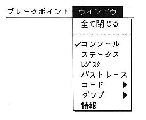
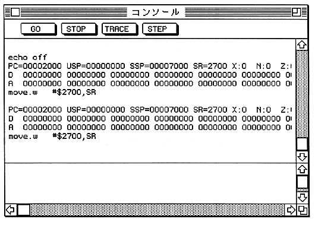

Select "Close All" to close all open windows.
Selecting any other menu item opens the corresponding window.
You cannot close individual windows from the Window menu.

The four buttons at the top of the window have a one-to-one correspondence with console commands as shown below, and each console command is actually entered when the button is pressed.